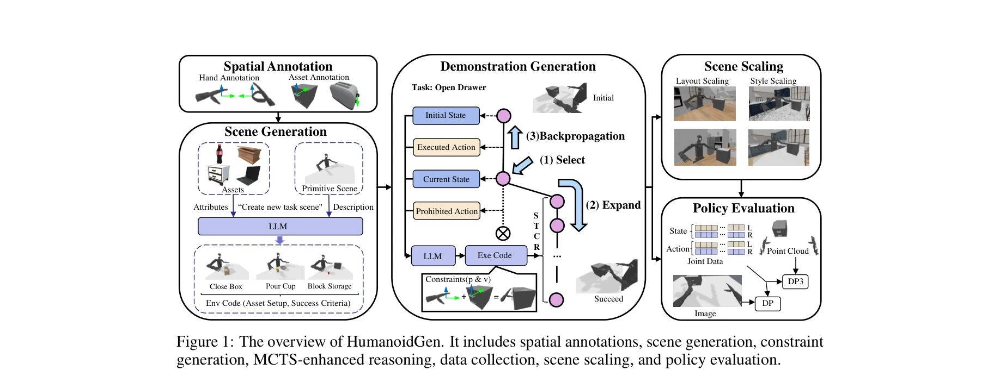

저자: Zhi Jing, Siyuan Yang, Jicong Ao, Ting Xiao, Yu-Gang Jiang, Chenjia Bai | 날짜: 2025-07-01 | URL: https://arxiv.org/abs/2507.00833

Figure 1: The overview of HumanoidGen. It includes spatial annotations, scene generation, constraint
HumanoidGen은 LLM 추론과 원자적 손 동작을 활용하여 휴머노이드 로봇의 양손 정교한 조작을 위한 시뮬레이션 데이터와 시연을 자동으로 생성하는 프레임워크이다. MCTS 기반 추론 강화를 통해 장시간 작업과 불충분한 주석에서의 계획 능력을 개선한다.
Figure 1: The overview of HumanoidGen. It includes spatial annotations, scene generation, constraint
Figure 1: The overview of HumanoidGen. It includes spatial annotations, scene generation, constraint
총평: HumanoidGen은 LLM 기반 자동화, 원자적 손 동작 설계, MCTS 강화 추론의 조합으로 휴머노이드 로봇의 양손 정교한 조작 데이터 생성에 새로운 접근법을 제시하며, HGen-Bench 벤치마크와 함께 데이터 스케일링의 성능 향상을 실증하여 실무적 가치가 높다. 다만 공간 주석의 수동 작성 부담과 sim-to-real 검증 부재가 확장성을 제한한다.